| ・ データの海 (H30.01.16) | |||
B4S山くんが1ヶ月にわたって根気よく測定したデータを集計した結果，グラフは100を越える状態になりました．なんとか理論と実験の差違について論じたいのですが，こっちのグラフは説明出来ても別のグラフでは説明がつかないという風に一筋縄ではいきません．とにかく多すぎる結果は全体像が見えにくい．ちょうどFの部屋に広い机があるので，データの海を作って泳いでみます． |
|||
|
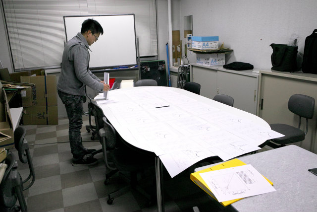
条件ごとに並べたり |
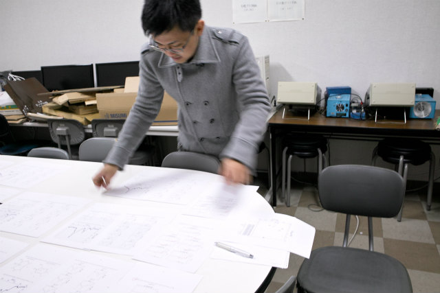
差が大きい順に並べたり | ||
|
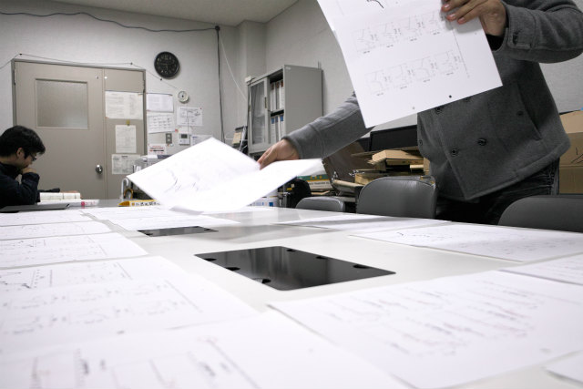
グループを作ったり |
隅っこに追いやられたB3I田くん | ||
|
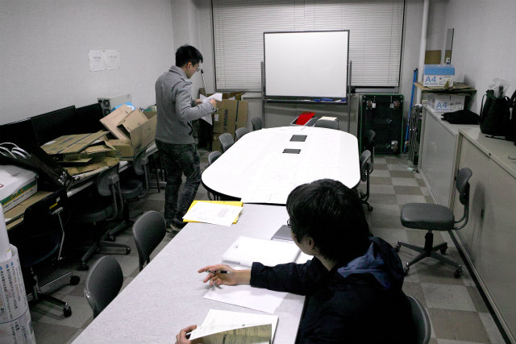
気付いた事を |
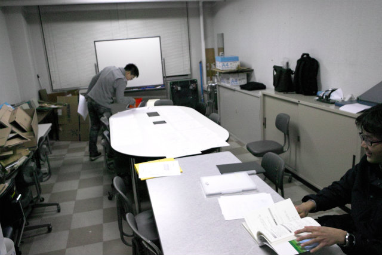
すぐに | ||
|
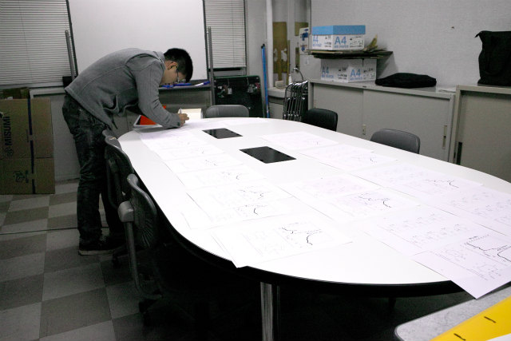
メモする |
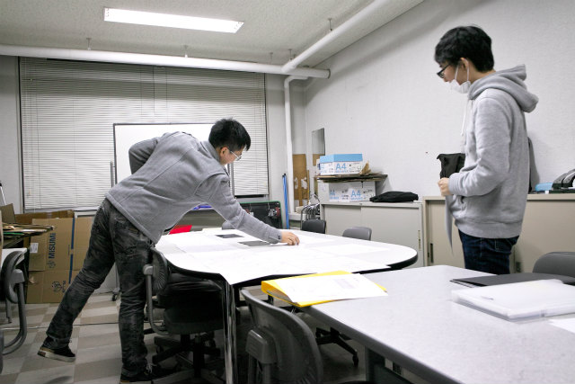
泳ぐS山くんを見守るM1S田くん | ||
|
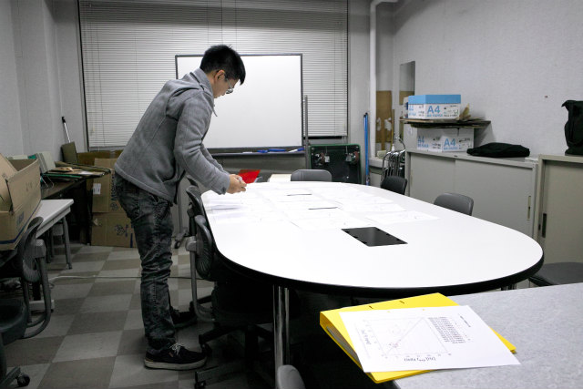
一覧性がわるい |
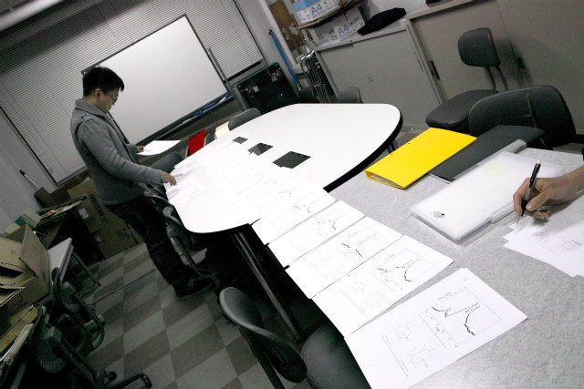
横に並べる | ||
|
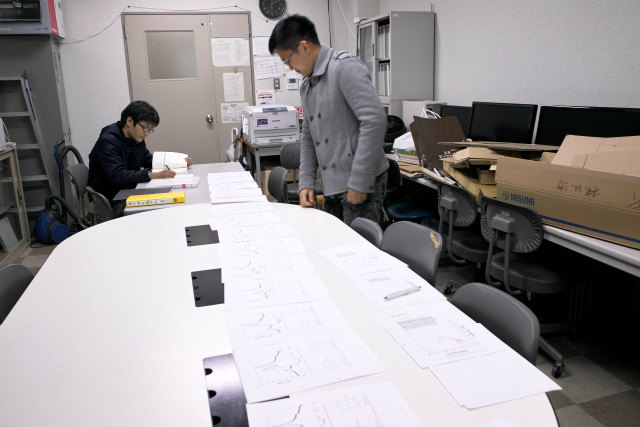
I田くんのスペースが |
うーん | ||
|
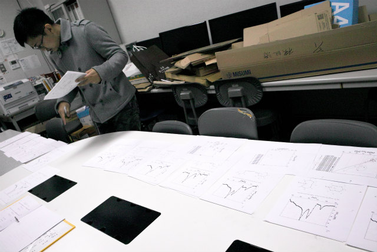
ズラしてみる |
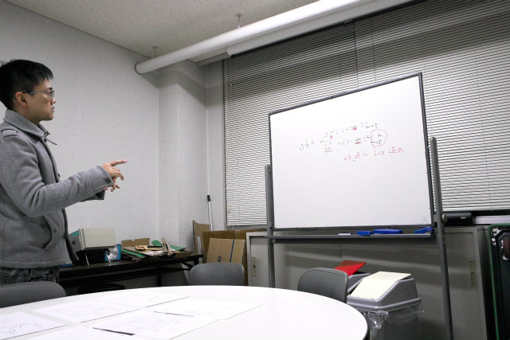
導出した式中の定数と変数にわけて | ||
|
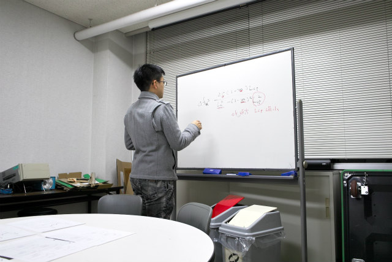
どの項が効いてるのか |
式からポイントが見えた | ||
|
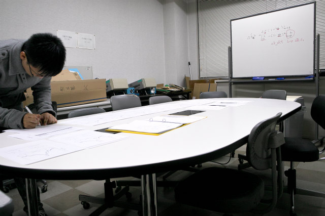
仮定が成立するかどうかが大事 |
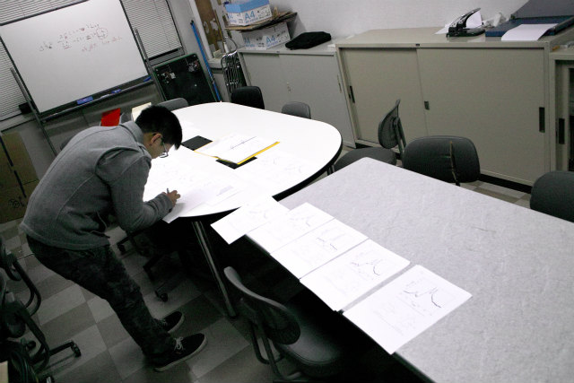
データを良く見ると結論付けられそう | ||
|
T田くんが結果の量に戦く |
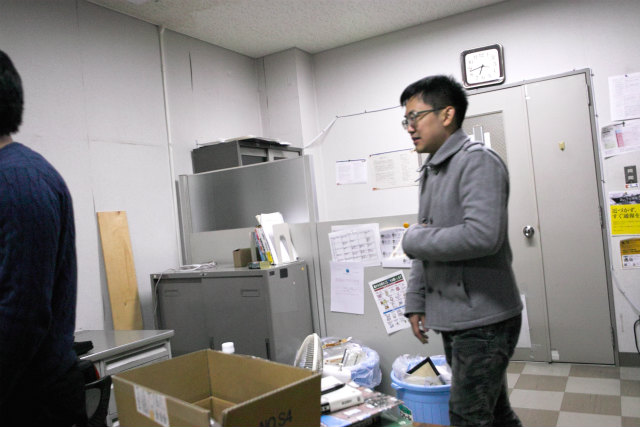
まだ増えるよ | ||